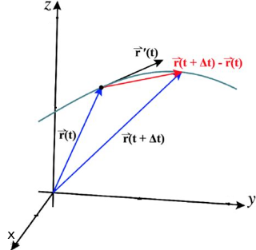
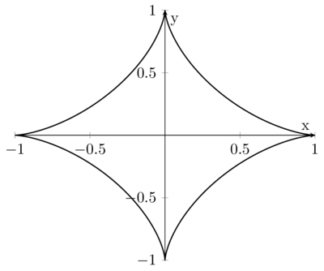

Derivative of a vector-valued function
We want now generalize the concept of derivative of vector-valued functions, r: ℝ ⟶ ℝn. The same definition given in calculus, of the derivative of a function in ℝ as limit tending to zero of the incremental ratio, applies as well to vector-valued functions
Note that the incremental ratio is between a vector and a scalar, thus a vector; the limit is with respect the distance in ℝn. As we have studied, limits of vector-valued functions are computed componentwise, thue the above derivative is equal to
So we conclude that
r'(t0) = (r'1(t0), r'2(t0), ..., r'n(t0)) 3.2.5
hence the derivative is as well computed componentwise: the derivative vector of r, is the vector whose components are the derivatives of r.
The geometrical meamning of the derivative is the following
The deirvative represents the instantaneuous velocity, at t0, of a particle as it moves along a smooth path. Thus r'(t) is the velocity of the particle and it is tangent to the trace, pointing in the direction of motion.
Example 3.2.3. For ellipse r(t) = (2cos t, 3sint), we have
r'(t) = (−2sin t, 3cost) ■
It also possible to define the speed (scalar velocity) as
v(t) = |r'(t)|
r'(t) gives a direction only in the case its components are not all null. This justifies the next definition
Definition 3.2.4. A regular curve is a curve r: I ⟶ ℝn (with I ⊆ ℝ) that has for every t a non-null tangent vector, i.e. r'(t) ≠ 0, ∀t ∈ I.
For regular curves, the tangent versor, is well defines
Example 3.2.4. The ellipse r(t) = (2cos t, 3sint), t ∈ [0,2π] is regular, indeed r'(t) = (−2sin t, 3 cos t) ≠ (0,0) for every t. The tangent versor is
Example 3.2.5. The Astroid
is not regular as r'(θ) = {−3(cos θ)2, sin(θ)2, 3(sin(θ))2 is zero for θ = kπ/2. And as it can be seen form the trace, cusps are present at such points.
Rules for computation of derivatives
From the definition of derivative of a function r: ℝ ⟶ ℝn and by property 3.2.5, follow immediately the usual rules as wekk for the computation of derivatives of vector-valued functions.
if u,v: ℝ ⟶ ℝn are differentiable, then
(u + v)' = u' + v';
(cu)' = cu'if φ: ℝ ⟶ ℝ is a differentiable function
u(φ(t)) = u'(φ(t)) φ(t)
-
(u ⋅ v)' = u' ⋅ v + u ⋅ v';
In the case u = v, which yields to 2u' ⋅ u = 0. Which means that if a vector-valued function has constant module, it is always orthogonal to its velocity vector, e.g. if a particles moves with constant speed v, the velocity u and acceleration, u' vectors are orhogonal to each other at any instant.
Polar form equations
A particular form parametric equations of a plane curve can have is the polar form. The equation
ρ = f(θ)
stands for (by letting x = ρ cos θ, y = ρ sin θ)
Archimede Spiral has equation
ρ = Aθ, θ ∈ [0, +∞]
with A a positive constant. The previous equation is equivalent to the parametric equations
The tangent vector is r'(θ) = A(cos θ − θ sin &tehta;, sin &tehta; + θcos θ) and is never null as it can be seen calculating the module of the vector
v(θ) = |r'(θ)| = A √1(1 + θ2) > 0, ∀θ
Conic Sections in Polar Form
Definition 3.2.6. The set of points in a plane such that the distance from a fixed point (called the focus) is in constant ratio to its distance from a fixed line (called the directrix) is called a conic. This set of points P(x,y) that satisfy the equation
is said conic with eccentricity ε. Since in polar coordinate we have
distance of P from the focus = r
and
distance of P from the d = p + r cos θ
The single equation for all these conics is
The eccentricity ε can be used to distinguish one conic section from another. For &psilon; ⟶ 0 and p = R/ε we find the equation of the circle
r = R
While for &psilon; ⟶ +∞ we find
r = −p/cos θ
which is the quation of a line.